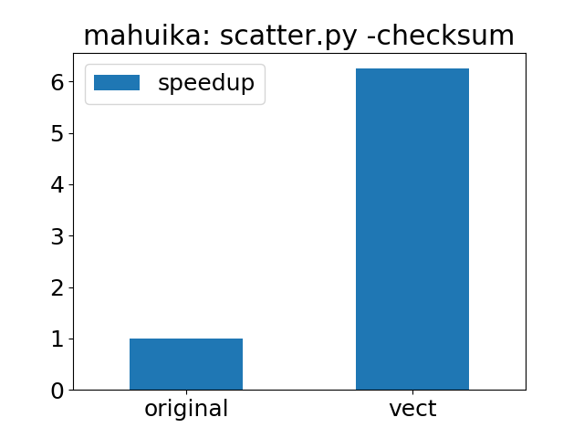

Vectorising
- Objectives
- What is vectorisation
- Identifying code sections for vectorisation
- Use numpy for fast array operations
- Exercises
- How much does vectorisation improve performance?
Objectives
You will:
- understand what vectorisation is
- learn to recognise code that can benefit from vectorisation
- learn how to vectorise a loop
We’ll use the code in directory vect. Start with
cd vect
What is vectorisation
Vectorisation in Python is a programming style where operations on a single piece of data, typically in a loop, are replaced by operations on entire arrays. Vectorisation can improve the performance of a code and can make the code more concise and easier to maintain.
In scripting languages, loops can be slow to execute because of the overhead of the interpreter, which may need to parse each expression, perform various input data checks and more. These overheads add up when expressions are repeated many times in a loop. Vectorisation avoids the issue by replacing the loop with a single array operation. This can significantly boost performance if the array operation is implemented in a compiled language such as C.
Identifying code sections for vectorisation
Start by looking for loops in your code. The more iterations the better.
- the loop should have a pre-defined number of iterations with no premature exit condition.
forloops can more easily be vectorised thanwhileloops. - each iteration should not depend on any previous iteration. One should be able to execute the iterations in any order.
- it is best not to have
ifstatements inside the loop as these could cause some iterations to take longer than others
Good candidates are loops where the same function is applied to each element. Reduction operations (for example sum or product of all array elements) are also good candidates.
When considering nested loops, start by vectorising the innermost loop, unless the innermost loop only performs very few iterations.
Use numpy for fast array operations
Array operations are available through the numpy Python module. numpy arrays behave in many respects like lists with the following restrictions:
- all array elements must have the same type (integer, float, etc.)
- array elements cannot be added or removed (without having to recreate the array)
On the other hand, numpy supports elementwise and reduction operations on arrays.
Use numpy arrays in place of lists if you don’t need the flexibility of lists. Vectorised Python code using large numpy arrays typically runs much faster than plain Python code with loops - often as fast as compiled code.
If your algorithm has high “algorithmic intensity”, where many operations are done on the same piece of data, you may find that implementing loops with numba or ctypes can give yet better performance. These methods may use fast processor caches more efficiently, avoiding the cost of repeatedly fetching data from memory. They may also avoid temporary arrays that numpy sometimes creates.
Example 1: function applied to each array element
Consider computing the sine function of 10 million elements and storing the result in an array
import numpy
n = 10000000
a = numpy.zeros([n], numpy.float64)
for i in range(n):
a[i] = numpy.sin(i)
The equivalent, vectorised version
import numpy
n = 10000000
ivals = numpy.arange(0, n)
a = numpy.sin(ivals)
runs 5-20 or more times faster.
Note that the vectorised version requires more memory since a temporary array (ivals) will need to be created. In general, the vectorised version may contain many more temporary arrays, so a trade-off must be made between memory usage and performance.
Example 2: total sum
n = 100000000
s = 0
for i in range(n):
s += i
can be rewritten as
import numpy
n = 100000000
s = numpy.sum(numpy.arange(0, n))
The vectorised code is not only faster but also more concise.
Exercises
We have written a partially vectorised version of
scatterunder thevectdirectory.
- profile or time the vectorised code and compare the timing to the non-vectorised code under
orig- in scatter.py, vectorise function
isInsideContourby eliminating the loop computing the boolean variableinsideand report the new timing.Hint: create array
area = a[0, :]*b[1, :] - a[1, :]*b[0, :]and check that all elements ofareamust be strictly positive (> 1.e-10) for the point to be inside
How much does vectorisation improve performance?
The plot below the speedup of the vectorised version of scatter.py compared to the version in the original directory:
